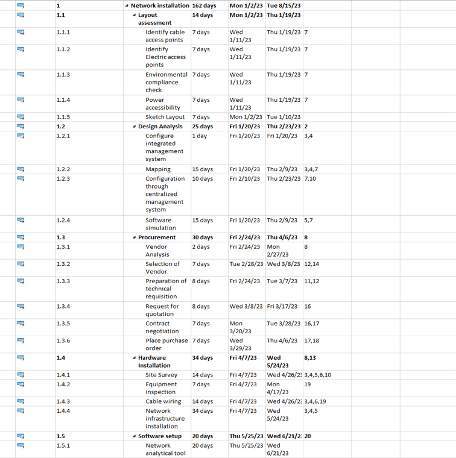
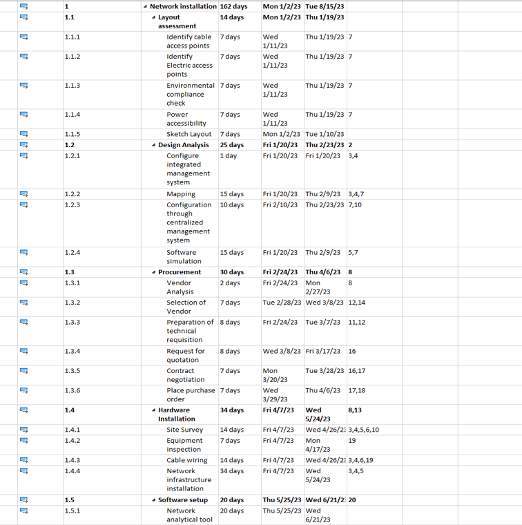
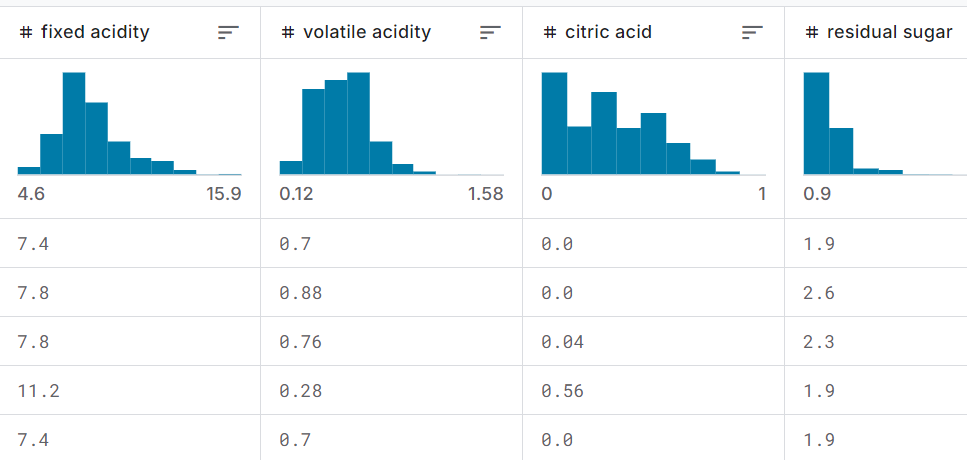

I'm Vinisha Maramraju, an Engineering Management grad student at NC State with a flair for analytics and a knack for project management. With over 2.5 years of experience in digging deep into data and leading projects, I'm passionate about turning insights into impact. Always ready for my next adventure, I'm driven by a love for innovation and making a difference—one project at a time!.
 


Implemented a transformative wireless network deployment at Rain Forest Paradise, Costa Rica, elevating staff efficiency by 23% and catapulting guest satisfaction by an astounding 53%. Within six months, enabled seamless Internet access for 250+ concurrent users. Managed a $45,500 budget efficiently. Demonstrated Control-Networks' unparalleled expertise in enhancing both operational efficiency and guest experiences.


Analyzed 20+ software marketplaces to define 15+ essential capabilities for Toshiba’s ELERA Marketplace. Benchmarked 10 competitors, assessed pricing models, and created a dashboard to visualize key ecosystem elements. Recommended a strategic model and growth plan, projected to boost market engagement and revenue by 18%


Transformed wine quality data management with a Microsoft Access database application, streamlining processes through user-friendly forms, robust data validation, and impactful SQL queries. Generated visually appealing reports, complete with insightful charts and graphs, optimizing data organization and facilitating efficient analysis for enhanced decision-making


Reduced credit risk by 20% among customers through strategic initiatives, mitigating acquisition risk to assess credit risk factors continuously. Employed Logistic Regression to build a predictive model identifying customers at default risk. Identified 10 key performance indicators/metrics (KPIs) for operational improvement.


Optimized meal deliveries, reducing delivery distances by 20%. Procured data for 25 cloud kitchens, simulated 50 service stations, and calculated precise coordinates. Using Python, PuLP, and data visualization, achieved a 2.4-mile reduction per delivery, resulting in a 30% cost reduction and annual savings.


Developed a recommendation system for personalized product suggestions in e-commerce using machine learning techniques. Analyzed model performance through a confusion matrix, identifying strengths in classifying negative cases with high precision and recall. Identified weaknesses in the model’s ability to classify positive cases, noting a high rate of false negatives (300) and false positives (113). Worked on improving accuracy in detecting positive cases, focusing on reducing missed predictions (false negatives). Utilized user behavior and preferences data to train the recommendation model for tailored product suggestions. Optimized model features to enhance personalization in e-commerce, addressing challenges posed by the variety of product options.